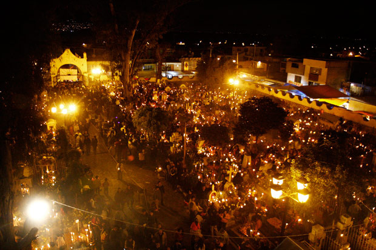
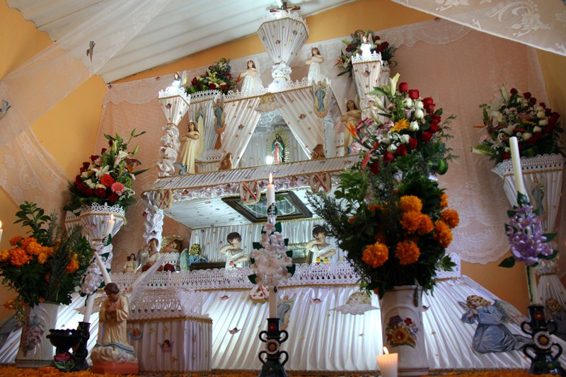

El Día de Muertos es una celebración mexicana de origen mesoamericano1 que honra a los difuntos el 2 de noviembre, comienza desde el 1 de noviembre, y coincide con las celebraciones católicas de Día de los Fieles Difuntos y Todos los Santos.
El Altar de muertos es un elemento fundamental en el conjunto de tradiciones mexicanas del Día de muertos, que consiste en instalar altares domésticos en honor de los muertos de la familia. El altar de muertos es una construcción simbólica de las creencias mesoamericanas sincréticas, que consiste en colocar plataformas en donde se depositan ofrendas florales y alimentos para rendir tributo a los antepasados familiares, a los difuntos cercanos o a personajes ilustres.
Mientras la capital mexicana celebra el cien aniversario de la muerte del artista que creó a la Catrina, docenas de videoblogueros ofrecen consejos sobre la manera de definir su apariencia cadavérica. José Guadalupe Posada, el caricaturista que creó a la Catrina, es homenajeado por la Ciudad de México con réplicas gigantescas de sus ilustraciones y una muestra de esqueletos como parte de la ofrenda del Día de Muertos que se inaugura el jueves en la plaza principal de la capital mexican
La cultura de un pueblo está basada en sus costumbres y tradiciones, la tradición del día de muertos representa una actitud específicamente mexicana ante la muerte, este día 2 de Noviembre "Día de los Difuntos", es un día consagrado a los muertos queridos. El día de muertos es una tradición que nos han heredado los antiguos mexicanos, y es eminentemente mexicana. Es extraña y muy característica, la idea, todavía arraigada entre una gran mayoría de mexicanos, de que en el más allá se la licencia a los difuntos para visitar a sus parientes que se han quedado en la tierra, un huésped ilustre, a quien se ha de festejar y agasajar en la forma más atenta.
El calendario religioso de la comunidad es variado e incluye la fiesta del tres de mayo, día de la Santa Cruz, la semana Santa y Días de Muertos; esta última es la celebración tradicional de mayor atracción turística, ya que los pobladores elaboran los famosos altares de muertos, que son muy vistosos, además existe un sincretismo de elementos prehispánicos y católicos que se expresan de forma muy particular durante esta fiesta.
